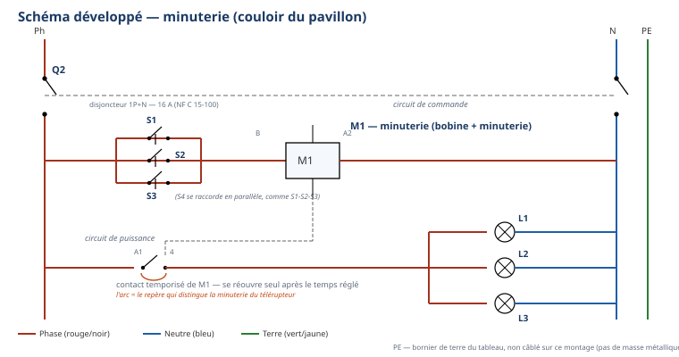

Thème / DomaineSchémas domestiques avancés — télérupteur et minuterie
Module atelier S3-E2 · 4 h × 2 — DOCUMENT PROFESSEURFiche-guide à compléter + transfert
SéquenceS3 · semaines 10-11
Salle / ZoneAtelier Élec — zone des platines télérupteur/minuterie + vestiaire
Durée prévue4 h par passage — deux demi-journées distinctes (semaine 10 et semaine 11)
ModalitéFiche-guide à compléter (texte à trous + schémas), puis câblage sur platine
Encadrement1 professeur, consignation appliquée sans rappel
Tâches
T10 Repérer, raccorder, assembler les réseaux fluidiques, aérauliques et électriques T11 Contrôler les circuits hors fonctionnement T12 Respecter les consignes de sécurité et protéger la zone de travail
Savoirs
S2.2 Lecture de plan NOUVEAU — 1ʳᵉ rencontre Prérequis réactivés : S2.1, S5.6
Savoir-être
Sécurité électrique sans rappel · rigueur du câblage · lecture méthodique et autonome d'un schéma
Compétences (≤ 4)
ConfortementC3.6 Câbler, repérer, connecter les liaisons électriques et électroniques sur T10 · T12 · S2.2 · S5.6 DécouverteC3.2 Identifier sur site les réseaux d'alimentation sur T10 · S2.2
Ce qui change depuis S2 — à annoncer explicitement aux élèves — En S2, les
montages câblés étaient simples (un interrupteur, une lampe). S3-E2 introduit un appareillage de
commande automatisée : un relais (télérupteur puis minuterie) piloté par plusieurs boutons poussoirs en
parallèle, avec deux circuits distincts (commande / puissance) à lire séparément — c'est le sens du savoir NOUVEAU
S2.2 lecture de plan. Les élèves rencontrent aussi pour la première fois C3.2 (Découverte) :
identifier sur site, dans le vrai tableau de l'atelier, l'arrivée Ph/N/PE et le circuit d'éclairage concerné —
à ne pas sauter, même si cela prend quelques minutes de plus en jalon A. La mise sous tension et les essais
restent, comme en S1-S2, des gestes exclusivement professeur.
Passage 1 / Passage 2 — ce qui change (conduite professeur)
Passage 1 (semaine 10) — télérupteur, très guidé. Jalon A (≈ 60 min) : fiche-guide avec banque de mots
pour le texte à trous, schémas unifilaire et développé à trous avec repères partiels, identification sur
site accompagnée. Jalon B (≈ 65 min) : câblage à partir du schéma complété, contrôle hors tension, mise sous
tension et essais par le professeur (chaque bouton poussoir testé). Passage 2 (semaine 11) — minuterie, autonomie guidée. Jalon A' (≈ 40 min) : même fiche-guide
transposée à la minuterie, sans banque de mots, schémas sans aucun repère — laisser l'élève chercher
quelques instants avant d'intervenir, même en cas d'hésitation visible ; ne pas redonner l'identification sur
site déjà acquise. Jalon B' (≈ 85 min) : câblage, contrôle hors tension, essais et réglage du temps
d'extinction par le professeur, en autonomie guidée — le professeur valide sans démontrer, sauf à la mise sous
tension et aux essais, qui restent, dans les deux passages, un geste exclusivement professeur.
Ce que ce document ajoute au TP élève
Ce document est le pendant exact du document élève : mêmes questions, même
numérotation, même séquençage en 2 passages × 2 jalons. Il y ajoute : les réponses attendues aux textes à trous et
aux questions, les critères de contrôle du câblage, la conduite détaillée de chaque jalon, les erreurs typiques
d'élèves avec leur remédiation, l'organisation du plateau, le minutage recompté pour les deux passages, et la
différenciation (consolidation / standard / approfondissement + FLE + TDAH-DYS). Aucune valeur non autorisée
n'est donnée : les valeurs NF C 15-100 (1,5 mm², 8 points d'éclairage maximum, disjoncteur 16 A) sont sourcées
dans les fiches télérupteur et minuterie de la bibliothèque ; toute autre valeur (tension de la bobine, temps
exact de la minuterie) reste « selon le matériel de l'atelier, à faire valider ».
Trame horaire — passage 1 (recomptée ligne à ligne)
Durée
Étape
Contenu
Demi-journée — 4 h 00 (préparation de chantier = 1 h 00)
10 min
1. Débuter la séance
Accueil, appel, rappel de l'organisation (fiche-guide, puis câblage).
Les 5 « je serai capable de… » affichés, lien avec C3.6/C3.2, statuts du jour.
15 min
4. Vérifier les prérequis
Passage en tenue échelonné ; en attente, mini-quiz sans schéma : couleurs normalisées, 4 étapes de la consignation, reconnaître un schéma simple allumage.
20 min
5. Donner la démarche
Mise en sécurité de la zone (ARU, trousse, gestes interdits) puis « planter la notion » sur les deux circuits commande/puissance (voir encadré ci-dessus).
60 min
6. Guider l'étude (a) — jalon A : fiche-guide télérupteur
Texte à trous avec banque de mots, schémas à trous avec repères partiels, identification sur site accompagnée.
15 min
Pause.
65 min
6. Guider l'étude (b) — jalon B : câblage et essais
Préparation platine, câblage commande puis puissance, contrôle hors tension, appel professeur, mise sous tension et essais (3 boutons poussoirs testés).
15 min
7-8. Synthèse + évaluer et réajuster
Présentation du câblage et du schéma complété, auto-positionnement, validation professeur.
10 min
8 bis. Bon de commande
Carnet de bord + bon de commande hebdomadaire.
10 min
9. Ranger — nettoyer
Platines hors tension, multimètres sur OFF, rangement.
5 min
10. Clôturer la séance
Retour tenue de ville, annonce du passage 2 (semaine 11).
Vérification passage 1 : préparation 1 h 00 + jalon A (60) +
pause (15) + jalon B (65) = 2 h 20 + synthèse/bon de commande/rangement/clôture 40 min = 4 h 00 exactes.
Trame horaire — passage 2 (recomptée ligne à ligne)
Durée
Étape
Contenu
Demi-journée — 4 h 00 (préparation de chantier = 1 h 00, identique)
60 min
Phases 1-5 (identiques au passage 1)
Accueil, situation (rappeler le passage 1 et l'objectif du jour : la minuterie), objectifs, prérequis, mise en sécurité.
40 min
6. Guider l'étude (a) — jalon A' : fiche-guide minuterie
Texte à trous sans banque de mots, schémas sans repère, identification sur site sans aide.
15 min
Pause.
85 min
6. Guider l'étude (b) — jalon B' : câblage, essais, réglage du temps
Câblage commande puis puissance, contrôle hors tension, essais professeur, réglage du potentiomètre de temps, mesure du délai d'extinction — autonomie guidée.
40 min
7-8-8bis-9-10
Synthèse, auto-positionnement, bon de commande, rangement, clôture — annonce de la suite (S3-T1 selon rotation).
Vérification passage 2 : préparation 1 h 00 + jalon A' (40) +
pause (15) + jalon B' (85) = 2 h 20 + synthèse/bon de commande/rangement/clôture 40 min = 4 h 00 exactes.
Les deux passages totalisent bien 240 min chacun ; seule la répartition entre jalons change, conforme au plan de
séance.
Sécurité — rituel déjà acquis, un seul geste qui ne s'allège jamais
La consignation (NF C 18-510) et la VAT ne sont plus démontrées en S3 : elles
sont exigées sans rappel. Un seul point de vigilance ne change jamais entre S1/S2 et S3, ni entre passage 1
et passage 2 : la mise sous tension et les essais après câblage restent des gestes exclusivement professeur.
Point de vigilance organisationnel — Ne fermer le disjoncteur d'un poste
qu'après avoir personnellement vérifié le contrôle hors tension de cet élève, jamais par lot ni sur simple
déclaration — règle identique à S1-S2.
Corrigé — texte à trous du télérupteur (jalon A)
Réponses, dans l'ordre du texte : commander — plusieurs endroits — 1,5 — 8 — 16 —
unipolaire — bipolaire — unipolaire — bipolaire
Rappel des deux dernières phrases du texte élève : « Un télérupteur unipolaire
(à un seul pôle) coupe uniquement la phase… Un télérupteur bipolaire coupe à la fois la phase et le
neutre. » Le mot « unipolaire » et le mot « bipolaire » apparaissent donc chacun deux fois dans le texte
complet (une fois dans l'énumération des deux types, une fois dans la phrase qui les définit) : le signaler aux
élèves qui bloquent sur la banque de mots « épuisée trop tôt ».
Question — pourquoi pas plus d'interrupteurs va-et-vient ?
Réponse attendue : un montage va-et-vient n'accepte que deux points de commande (deux interrupteurs
S1/S2 reliés par deux navettes). Un télérupteur, lui, accepte autant de boutons poussoirs que nécessaire,
tous simplement raccordés en parallèle sur le même circuit de commande — c'est la bonne solution dès que le
client veut plus de deux points de commande, ce qui est le cas ici (3, puis 4 avec la minuterie).
Corrigé — schéma unifilaire et schéma développé (télérupteur)
Schéma développé — version légendée (corrigé). Version élève sans repères en annexe 1.
Point de contrôle
Ce qui est attendu / ce qui alerte
Schéma unifilaire
Repères Q2 (tableau), T1 (tableau), S1/S2/S3 (boutons poussoirs, mur), L1/L2/L3 (points lumineux, plafond) correctement placés. Une hésitation sur la position exacte des BP le long du couloir est sans importance : ce qui compte est le raccordement fonctionnel, pas la géométrie réelle.
Schéma développé — circuit de commande
Phase → 3 boutons poussoirs en parallèle → borne A1 de la bobine T1 → borne A2 → neutre. Erreur fréquente : un élève raccorde les boutons poussoirs en série (copie le réflexe du va-et-vient) — à corriger explicitement, c'est l'erreur typique du module.
Schéma développé — circuit de puissance
Phase → contact de sortie de T1 → 3 lampes en parallèle → neutre. Le contact de sortie n'est jamais câblé directement en série avec la bobine : ce sont deux circuits séparés, reliés seulement par l'action mécanique/électronique interne du relais.
Point de vigilance — la question centrale du module — Un télérupteur
bascule d'état à chaque appui (allumé → éteint → allumé…), quel que soit le bouton poussoir actionné,
puisque tous sont en parallèle sur la même bobine. C'est ce qui permet à un très grand nombre de points de
commande de piloter une seule lampe — à faire dire aux élèves en fin de jalon A, avant même le câblage.
Corrigé — câblage et essais du télérupteur (jalon B)
Point de contrôle
Ce qui est attendu / ce qui alerte
Identification sur site (C3.2)
L'élève montre, sur le tableau réel, le disjoncteur général, le disjoncteur du circuit d'éclairage concerné, et nomme Ph/N/PE. Une confusion entre l'arrivée générale et un départ de circuit est fréquente en première rencontre : reformuler la différence sans la démontrer une deuxième fois si l'élève a déjà eu l'explication en phase 5.
Contrôle hors tension
Continuité proche de 0 Ω un bouton poussoir appuyé, résistance infinie sinon — logique identique aux contrôles de S1-S2, transposée au circuit de commande.
Essais (professeur)
Les 3 boutons poussoirs doivent chacun faire basculer l'état des 3 lampes. Si un bouton ne fonctionne pas : vérifier en priorité son raccordement en parallèle (souvent câblé en série par erreur, ou une de ses deux bornes non raccordée).
Question — bouton va-et-vient vs bouton télérupteur
Réponse attendue : un interrupteur de va-et-vient reste dans la position où on le laisse (bistable
mécanique). Un bouton poussoir de télérupteur revient tout seul à sa position de repos dès qu'on le
relâche (à ressort) : cela n'a aucune importance pour le fonctionnement, car c'est la bobine du télérupteur
qui mémorise l'état, pas la position du bouton.
Corrigé — texte à trous de la minuterie (jalon A')
Réponses, dans l'ordre du texte : commander — plusieurs points lumineux — une durée —
1,5 — 8 — 16
Question de transfert — mêmes valeurs NF C 15-100 ?
Réponse attendue : oui, les valeurs sont identiques (1,5 mm², 8 points d'éclairage maximum, disjoncteur
16 A), car la norme NF C 15-100 fixe ces règles pour tout circuit d'éclairage, quel que soit l'appareillage
de commande utilisé (interrupteur, va-et-vient, télérupteur ou minuterie) : c'est le circuit d'éclairage qui est
réglementé, pas le type de commande.
Corrigé — schéma unifilaire et schéma développé (minuterie)

Schéma développé — version légendée (corrigé), arc de temporisation visible sur le
contact de sortie. Version élève sans repères en annexe 2.
Point de contrôle
Ce qui est attendu / ce qui alerte
Schéma unifilaire
Q2, M1 (minuterie, tableau), S1 à S4 (4 boutons poussoirs — un de plus qu'au télérupteur), L1/L2/L3 (3 points lumineux). Signaler explicitement le 4ᵉ bouton : il se raccorde en parallèle exactement comme les trois autres.
Schéma développé — circuit de commande
Identique en structure au télérupteur : phase → 4 boutons poussoirs en parallèle → borne B (ou A1) de M1 → borne A2 → neutre.
Schéma développé — circuit de puissance
Identique en structure, mais le contact de sortie de M1 porte un arc de temporisation (symbole du contact temporisé) : c'est ce détail, et lui seul, qui distingue le schéma de la minuterie de celui du télérupteur.
Question — identique / différent entre les deux schémas
Réponse attendue :identique : la disposition générale (Ph/N/PE, disjoncteur, boutons poussoirs en
parallèle, bobine, lampes en parallèle) et le principe de câblage en deux circuits (commande / puissance).
Différent : le contact de sortie porte un petit arc sous le trait de contact chez la minuterie — c'est le
symbole de la temporisation : ce contact se réouvre tout seul après un temps réglé, alors que le
contact du télérupteur reste dans son état jusqu'au prochain appui.
Point de vigilance — transfert attendu — Le passage 2 vérifie que l'élève
sait transposer une méthode déjà apprise, pas qu'il mémorise un nouveau vocabulaire par cœur. Un élève qui
redemande la définition de « circuit de commande » alors qu'il l'a manipulée au passage 1 doit être renvoyé à ses
propres notes du passage 1 avant toute nouvelle explication.
Corrigé — câblage, essais et réglage du temps (minuterie, jalon B')
Point de contrôle
Ce qui est attendu / ce qui alerte
Contrôle hors tension
Identique en logique au passage 1, transposé à 4 boutons poussoirs.
Essais (professeur)
Les 4 boutons poussoirs doivent chacun allumer les 3 lampes.
Réglage du temps
Potentiomètre de réglage identifié sur la minuterie (plage typique 0,5 à 10 min selon le matériel de l'atelier, à faire valider). Le régler pour se rapprocher au mieux de la demande du client (6 min) ; aucune valeur cible exacte n'est imposée par ce document au-delà de cette demande client.
Chronométrage de l'extinction
Relevé au chronomètre par l'élève après le dernier appui. Un écart de quelques dizaines de secondes avec le réglage affiché est normal (composant électromécanique ou électronique simple) : ne pas exiger une précision de laboratoire.
Question de synthèse — quel élément du circuit de puissance porte la
différence ?
Réponse attendue :le contact de sortie du relais (celui qui alimente les lampes). Chez le
télérupteur, ce contact bascule et reste dans son état jusqu'au prochain appui (bistable). Chez la
minuterie, ce même contact se referme à l'appui puis se réouvre automatiquement après le temps
réglé, sans intervention humaine : c'est le composant temporisateur intégré à la minuterie qui commande cette
réouverture.
Question — 6 min demandées, temps réglé différent ?
Réponse attendue : proposer de régler à nouveau le potentiomètre en se rapprochant de la valeur
mesurée manquante, puis de chronométrer à nouveau pour vérifier — c'est une démarche de réglage progressif
par approximations successives, transférable à d'autres appareillages réglables du métier (pressostats,
thermostats).
Organisation du plateau
Zone
Fonction / matériel
Points de vigilance
Postes élèves — passage 1
1 platine « télérupteur » par élève ou binôme, 3 boutons poussoirs, disjoncteur individuel maintenu ouvert, multimètre par poste.
Prévoir un jeu de fiches techniques télérupteur (grand format, ou vidéoprojetées) pour la phase 5 et le jalon A.
Postes élèves — passage 2
1 platine « minuterie » par élève ou binôme, 4 boutons poussoirs, chronomètre disponible (téléphone interdit : prévoir chronomètres de l'atelier ou horloge murale).
Vérifier à l'avance que chaque minuterie a un potentiomètre accessible et réglable sans outil spécial.
Tableau de l'atelier (identification sur site)
Organiser un passage échelonné par petits groupes devant le tableau réel pendant le jalon A, pour ne pas créer d'attroupement ni de temps mort pour les autres élèves.
Le tableau reste sous tension pendant cette observation : rappeler qu'on regarde, on ne touche rien.
Erreurs typiques des élèves + remédiation
Erreur observée
Remédiation immédiate
Boutons poussoirs câblés en série (réflexe du va-et-vient)
Faire vérifier au multimètre : en série, un seul bouton relâché coupe tout le circuit de commande. Comparer avec le schéma complété qui montre bien un raccordement en parallèle.
Circuit de commande et circuit de puissance confondus (fils mélangés)
Faire recolorier au feutre, sur le schéma papier, les deux circuits avant de recâbler physiquement.
Identification sur site bâclée ou sautée
Ne pas laisser passer : c'est la première rencontre avec C3.2, la compétence doit être réellement observée, pas seulement cochée.
Passage 2 : élève qui redemande le vocabulaire déjà vu au passage 1
Renvoyer systématiquement à ses notes du passage 1 avant de réexpliquer — c'est le principe même de l'autonomie guidée.
Réglage du temps non vérifié après câblage
Rappeler que le contrat avec le client n'est rempli que si le temps mesuré est cohérent avec la demande (6 min) — pas seulement si la lampe s'éteint « au bout d'un moment ».
Différenciation
Profil
Adaptation
Consolidation
Élèves positionnés 1-2 à C3.6 lors d'É1 (voir S3-T2) : autoriser une relecture guidée du schéma développé simple allumage de S1 avant d'aborder les deux circuits ; le professeur reste au poste pour le premier raccordement du circuit de commande.
Standard
Déroulement tel que décrit dans le document élève, 2 jalons par passage, aides retirées au passage 2.
Approfondissement (tutorat)
Après validation de son propre câblage, l'élève explique à un pair la différence entre circuit de commande et circuit de puissance, sans jamais câbler à sa place.
FLE
Vocabulaire nouveau (commande, puissance, bobine, contact, temporisé) introduit avec pictogramme + geste (montrer le fil, pas seulement le nommer) ; couleurs des fils toujours prioritaires sur le vocabulaire comme repère.
TDAH / DYS
Étapes de câblage toujours découpées en cases à cocher séparées, circuit de commande et circuit de puissance traités dans deux blocs visuellement distincts (déjà fait dans le document élève) ; visa professeur matérialisé par une case bien visible à ne pas sauter.
Échelle FrigorX : 0 Non évalué · 1 Non acquis · 2 En cours
d'acquisition · 3 Acquis · 4 Parfaitement maîtrisé. Statuts du jour : C3.6 Confortement, C3.2
Découverte — aucune compétence en statut Évaluation dans ce module (rappel : pas d'éval propre dans
S3, cf. cadrage). Les positionnements du jour alimentent le repérage pour la remédiation continue et pour
l'évaluation É2 (semaine 13, rangée en S4).
Compétence / savoir-être
0
1
2
3
4
C3.6 Câbler, repérer, connecter les liaisons électriques et électroniques sur T10 · T12 · S2.2 · S5.6
Compétence non observée ce jour.
Câblage non conforme au schéma complété, malgré aide, ou circuit de commande et circuit de puissance confondus.
Câble avec l'aide du professeur pour au moins l'un des deux circuits (commande ou puissance).
Câble seul(e) le télérupteur ET la minuterie à partir des schémas complétés, conformes, contrôle hors tension réalisé avant tout appel.
Comme « Acquis », et explique à un pair la différence entre circuit de commande et circuit de puissance.
C3.2 Identifier sur site les réseaux d'alimentation sur T10 · S2.2
Compétence non observée ce jour.
Ne repère pas l'arrivée ni le circuit d'éclairage sur le tableau réel, même avec aide.
Repère l'arrivée et le circuit d'éclairage avec l'aide du professeur.
Repère seul(e), sur le tableau réel, l'arrivée, le circuit d'éclairage concerné et les conducteurs Ph/N/PE.
Comme « Acquis », et explique pourquoi ce repérage est indispensable avant toute intervention.
Geste interdit commis (fil touché sans VAT, mise sous tension sans contrôle) : niveau 1 automatique, indépendamment de la qualité du reste du travail.
Sécurité globalement respectée, quelques rappels nécessaires.
Consignation et VAT appliquées sans rappel, lecture de schéma méthodique (commande puis puissance) sans confusion.
Comme « Acquis », et veille spontanément à la sécurité d'un pair.
Point de vigilance correction — tout geste interdit de sécurité entraîne
automatiquement un niveau 1 — Non acquis sur le savoir-être, quelle que soit la qualité du câblage réalisé
ce jour-là : principe non négociable, cohérent avec les grilles S1-S2. Les positionnements de ce module ne sont
pas remontés (aucun statut Évaluation dans S3) mais nourrissent le repérage des élèves à revoir en priorité
avant É2.
Croisements interdisciplinaires
Prévention des risques électriques — consignation, NF C 18-510 ;
Technologie — lecture de plan (S2.2), appui direct du module théorique S3-T1 ;
Co-intervention français — rédaction du carnet de bord du module (F3) ;
Remédiation post-É1 — les élèves positionnés 1-2 à C3.6 lors d'É1 bénéficient d'un accompagnement
renforcé au jalon B (voir S3-T2 et variante consolidation ci-dessus) ;
Vers l'évaluation É2 (semaine 13, rangée en S4) — ce module prépare la lecture et le câblage de
schémas d'appareillages de commande, savoir réinvesti dans les modules ultérieurs.
D'après : le-telerupteur.pdf +
le-telerupteur-a-completer.pdf (Fiche Communication technique, Électricité bâtiment, Version 001-2015,
02_CAP-IFCA/S4-Electricite) ; cours-minuterie.pdf + la-minuterie-eleve.pdf (Fiche Communication technique,
Électricité bâtiment, Version 001-2015, 02_CAP-IFCA/Froid-Frigorifique) — situation « couloir, 3 points lumineux,
4 boutons poussoirs, extinction 6 min » reprise et anonymisée (source originale : nom de client anonymisé en
« le client »). Valeurs NF C 15-100 (câblage 1,5 mm², 8 points d'éclairage maximum, disjoncteur 16 A) et
unipolaire/bipolaire (coupure phase seule / phase + neutre) sourcées dans ces deux fiches. Symboles graphiques :
bibliothèque de symboles inerWeb (`C:\git\usine-contenu\bibliotheque-symboles\catalogue.json`) — télérupteur,
minuterie, bp_archi, interrupteur_archi, lampe_fluorescente, disjoncteur_1p_n, copiés dans `images\` de ce dossier ;
schémas unifilaires et développés composés à partir de ces symboles par le rédacteur, fidèles à la topologie des
fiches sources. Continuité directe des documents S1-E1, S2-E1 et S3-E1 produits pour cette même classe.